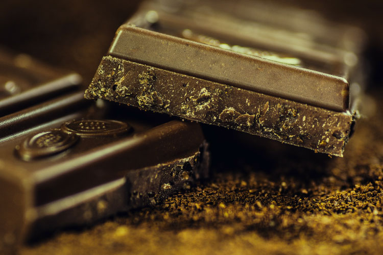
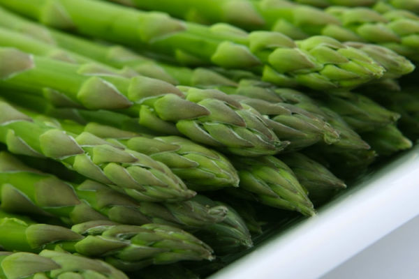
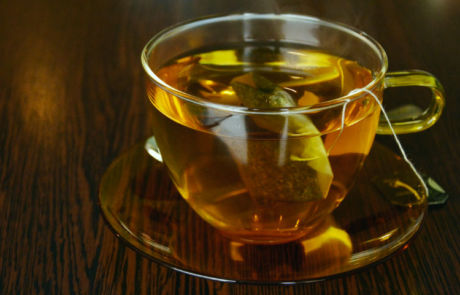
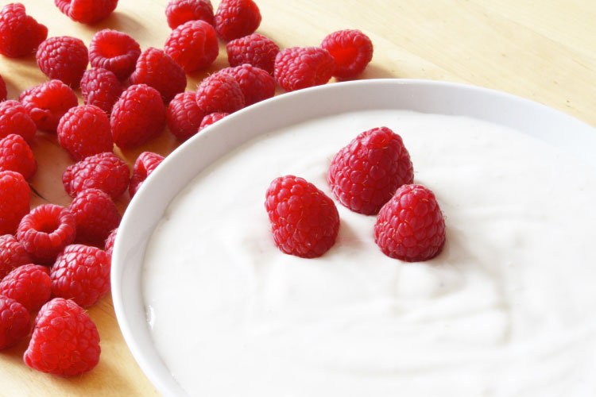
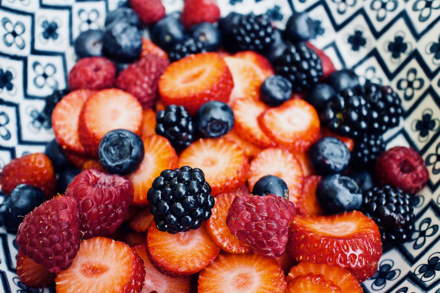
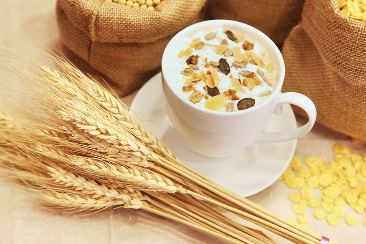
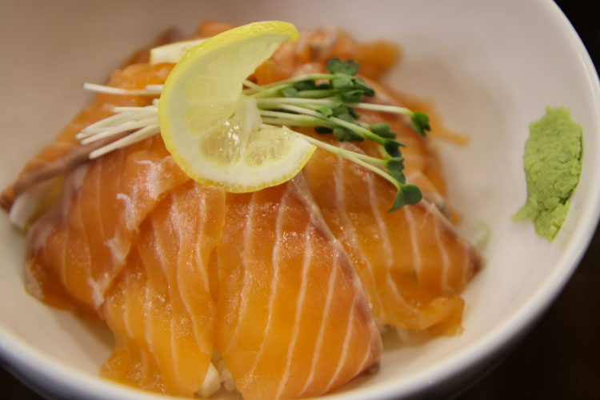
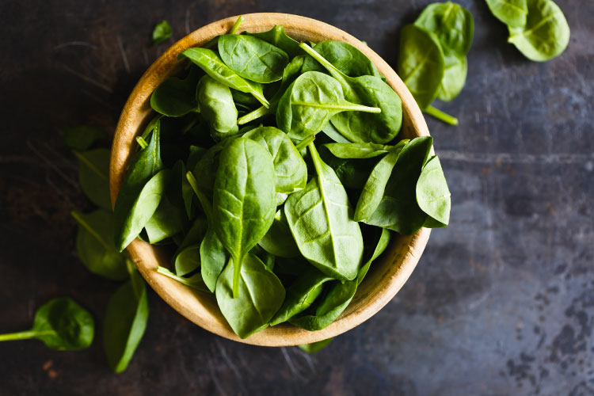
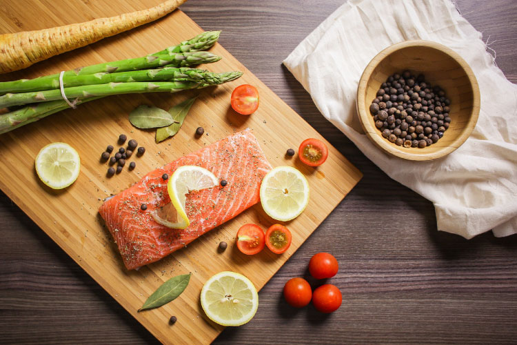

Combata o Stress com a Alimentação

Os alimentos para combater o stress podem desempenhar um papel fundamental no tratamento deste problema, principalmente se inseridos numa dieta saudável. Uma boa alimentação é fundamental para a saúde e os alimentos para combater o stress, podem ser verdadeiros calmantes.
QUAL A ORIGEM DO STRESS?
Não é só por questões de trabalho que o stress aparece, apesar deste ser um dos principais motivos. O stress também aparece como consequência de um estilo de vida agitado, problemas familiares e/ou financeiros, preocupações com os estudos ou até mesmo porque se é demasiado exigente para consigo e acaba-se por não aguentar a pressão.
A alimentação pode ter um papel muito importante na recuperação deste tipo de estados de agitação e ansiedade. Ainda que os estados de stress nos levem a ter uma alimentação descuidada e muitas vezes compulsiva, é também através de alimentos para combater o stress que o problema pode ser resolvido.
EXPERIMENTE ESTES ALIMENTOS PARA COMBATER O SEU STRESS DIÁRIO
Chocolate Negro: O chocolate negro contribui para a diminuição do stress. Um estudo recente concluiu que comer cerca de 40g de chocolate preto por dia durante duas semanas, ajuda a reduzir hormonas relacionadas com o stress.
Os especialistas acreditam que é devido à quantidade de antioxidantes presentes neste tipo de chocolate que isso acontece. Além disso, o chocolate tem uma ação estimulante e anti-depressiva.
Espargos: A depressão está associada a um baixo nível de ácido fólico. Uma simples porção de espargos é o suficiente para fornecer dois terços do valor diário necessário. Seja em saladas, grelhados ou assados, este alimento é também uma excelente fonte de fibras e vitamina B.
Chá: O chá é das bebidas mais utilizadas pelos consumidores para aliviar os sintomas do stress. As folhas do chá contêm centenas de compostos bioativos, incluindo aminoácidos, cafeína, linhinas, proteínas, xantinas e flavonóides. Julga-se que a L-Teanina, um aminoácido presente nas folhas de chá, é a responsável pela promoção do relaxamento e alívio do stress, bem como a melhoria da qualidade do sono.
O principal chá dentro desta categoria é o chá de camomila. Já foi demonstrada a sua eficácia em pessoas com transtorno de ansiedade generalizada, onde após oito semanas de tratamento, tiveram uma diminuição significativa nos sintomas de ansiedade.
Iogurte: De acordo com a pesquisa crescente que tem vindo a ser feita nesta área, pode haver uma forte ligação entre as bactérias presentes no intestino e a saúde mental. O cérebro envia sinais para o intestino e é por isso que quando se está “stressado”, também é comum haver dores de estômago.
O consumo de probióticos do iogurte ajuda a manter as bactérias saudáveis no estômago.
Frutos Vermelhos: Todas as bagas, incluindo morangos, framboesas e amoras, são ricas em vitamina C, uma vitamina que se tem mostrado útil no combate ao stress.
Além disso, estes frutos possuem antioxidantes capazes de reforçar o sistema imunitário e as defesas do organismo, prevenir o envelhecimento das células, e deixar o organismo mais apto para combater o stress acumulado.
Aveia: Quando estamos num estado de stress, o organismo “pede” hidratos de carbono porque estes aumentam os níveis de serotonina no cérebro, mas é importante escolher alimentos fornecedores de hidratos de carbono complexos que são ricos em fibras para manter os níveis de açúcar no sangue estáveis.
Os flocos de aveia ou a farinha de aveia são, não só um alimento reconfortante com capacidade de regularizar o stress, como também mantêm os níveis de açúcar no sangue estáveis.
Peixes Gordos: Alimentos como o salmão, o atum ou a sardinha são ricos em ácidos gordos ómega-3, uma gordura saudável que demonstra desempenhar um papel importante na diminuição da ansiedade e dos sintomas de depressão, e ainda melhoram a capacidade para lidar com o stress.
Vegetais de Folha Verde: De acordo com especialistas, legumes e frutas verdes são grandes aliados na produção de dopamina, o químico que ajuda à sensação de calma. São exemplos, os espinafres, os agriões, as couves, o feijão-verde, as ervilhas, a maçã, o kiwi e a lima.
CONSIDERAÇÕES FINAIS
Existem vários alimentos e bebidas que podem ajudar a lidar com sintomas de ansiedade e stress, pois podem reduzir a inflamação e aumentar a saúde do cérebro.
A ingestão de nutrientes específicos, como a vitamina C, ácido fólico, ácidos gordos ómega-3 e outras substâncias ajudam a melhorar os sintomas de stress, e por isso devem ser ingeridos em vez dos chamados “alimentos de conforto” que normalmente são pobres nutricionalmente e ricos em energia, gordura e açúcar.
